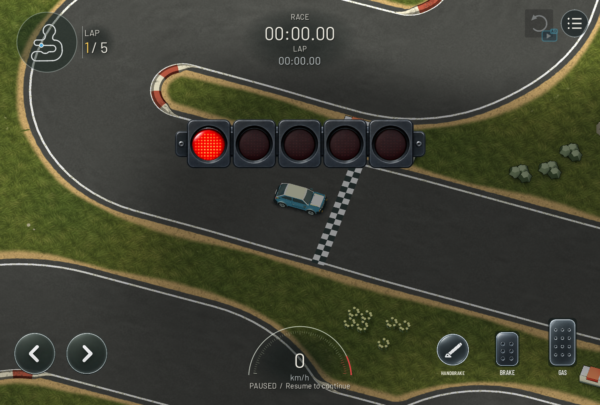

Kit 105 before; kit 106 after. Road, kerbs and sand shoulder remain flat. Drag to compare.

Car on a mound at the production camera · Closer terrain/contact inspection · Actual tests and acceptance limits